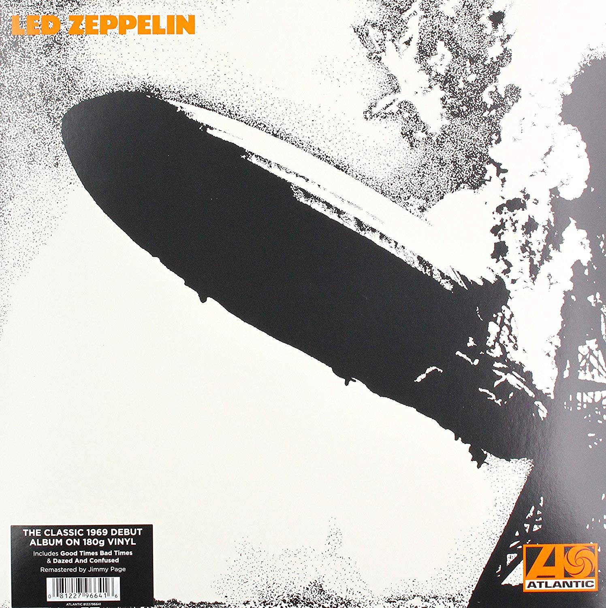
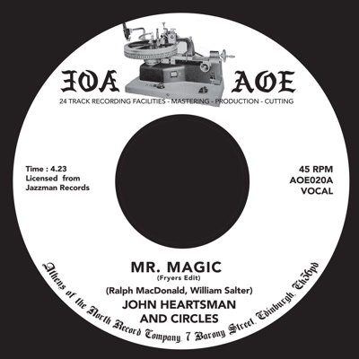
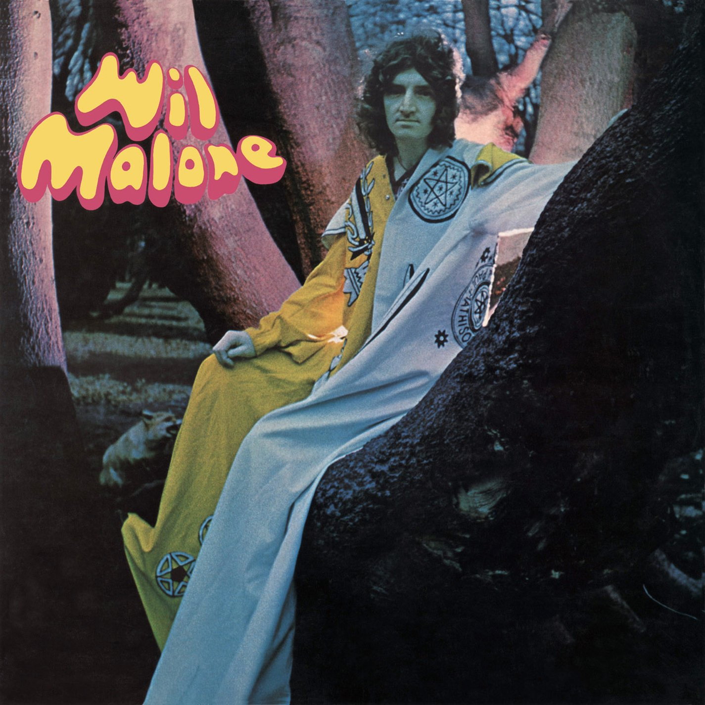

Top 10 Vinyl Records
Compilation of the best 10 albums of 2019
| Position | Vinyls | Description |
| 10º |  |
Never Mind the Bollocks is the only work of the Sex Pistols. 1977 vinyl edited by Virgin Records, made in England. |
| 9º | = |
1125/5000
Never Mind the Bollocks is the only work of the Sex Pistols. 1977 vinyl edited by Virgin Records, made in England.
On June 3 the first three albums remastered by Jimmy Page are reissued, accompanied by unpublished material Multiple formats will be published: CD, Vinyl, Digital Album and Super Deluxe Box in Limited Edition John Bonham, John Paul Jones, Jimmy Page and Robert Plant formed Led Zeppelin in 1968. In the next decade the band became became one of the most influential and innovative groups of modern music, selling more than 300 million of albums worldwide. His songs are one of the most celebrated in the history of rock roll n ’roll and today has an echo between fans of all ages across the planet. It doesn't matter how many times you have listened to his music because Led Zeppelin has never sounded as they will from now on. |
| 8º |  |
The Beatles' remastered albums, published on CD in 2009 and for digital download only on iTunes in 2010, they are now released in an expected stereo vinyl edition on November 13, 2012. Made of 189 grams vinyl with the highest audiophile quality and facsimile reproductions of the original discs, The 14 albums recover their original glory with all their details, including the group's poster in The White Album, the Sgt cut-outs. Pepper’s Lonely Heart Club Band and the special inner covers of the discs. Each LP will be available individually and all together in a limited edition box of 50,000 copies with a book of 252 pages. |
| 7º |  | Between 1964 and 1972, Wilson Pickett established himself as one of the best soul men of all time with a series of successes
incendiary pop and R&B like In the Midnight Hour, Land of 1,000 Dances, Mustang Sally and Funky Broadway. But the scorching career of Wicked Pickett did not stop when he left Atlantic Records. Starting with Mr. Sr. 1973 Magic Man, Pickett recorded four studio albums poignant for RCA Records, where, in two extremely productive years, achieved its latest Hot 100 hits, as well as a series of hits in the R&B lists. However, Pickett's RCA discography has been almost ignored in the era of compact discs. |
| 6º |  | Release 2012. This album was released in 2009 through Record Collector in the United Kingdom and is now available for retail sale. 180 gram vinyl edition for audiophiles of this highly sought after 1970 album. A psychological classic that recalls the trivial side of Donovan. Put the acid in "Acid Folk". |
| 5º |  |
Hubo una serie de álbumes creados en cantidades muy pequeñas en los años 60 y 70 que por su escasez son objetivo de coleccionistas, y que siempre mantendrán su valor. Algunos de estos discos antiguos, hay que decir, contienen música que es pobre, pero Peter Howell y John Ferdinando lanzaron Cuatro álbumes bajo cuatro nombres diferentes. Los arreglos maravillosos de las canciones Fly Away y otros LPs como Ithaca’s A Game For All Who Know siguen siendo santos griales para coleccionistas. 675/5000 There were a series of albums created in very small quantities in the 60s and 70s that due to their scarcity are the objective of collectors, and that they will always maintain their value. Some of these old records, it must be said, contain music that is poor, but Peter Howell and John Ferdinando released Four albums under four different names. Wonderful arrangements of Fly Away songs and other LPs such as Ithaca’s A Game For All Who Know remain Holy Grails for collectors. |
| 4º |  |
This vinyl record is already valued at around € 800, although everything will depend on the state of the disc. In any case, it is a known psychedelic jewel. However, like Vashti Bunyan and Elias Hulk's albums that are in a similar price range, or Leafhound’s Growers by Mushroom in a higher range, a copy of this album in perfect condition will keep due to demand among collectors. The fraction of copies that are in an optimal condition is very low. Despite a recent reissue, the demand for this LP is not going to disappear for at least a decade and will remain on the list of the most wanted vinyl for some time. |
| 3º |  |
There is still great interest in the Vertigo label and the famous frenzy that broke out on eBay for a few years has increased it. Copies of Rod Stewart's Gravy Train’s Ballad for A Peaceful Man or An Old Raincoat Won’t Let You Down have been sold for prices far superior to those cataloged. Dr. Z's Three Parts To My Soul is one of the rarest and therefore a good investment, if it can be found a copy with the vinyl and the cover in optimal conditions at a reasonable price. The same applies to Linda Hoyle's Pieces Of Me vinyl shortage, as of 1971. |
| 2º |  |
Hank Mobley is a tenor of the soul that his Blue Note albums are one of the most sought after vinyl worldwide. Jazz does not go out of style, and, despite international reissue programs, collectors still want classic records of stamps such as Blue Note, Riverside, Prestige or Impulse. You must pay attention to the edition of these albums as there were many. Collectors take labels seriously to show the address of the Blue Note label on them (47 West 63rd NYC / 47 West 63rd New York 23). |
| 1º |  |
The value of this punk vinyl record continues to grow, a copy in perfect condition is still the jewel in the crown from any punk collection. Despite having an orientation price of € 10,000, this is a good investment. The Sex Pistols have connected with each new generation that has emerged since 1977. A perfect copy of your album pressed in the UK Never Mind The Bollocks. Here’s The Sex Pistols is also a good investment. |